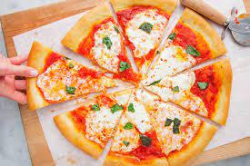
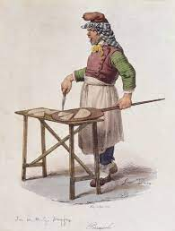

The word "pizza" first appeared in a Latin text from the central Italian town of Gaeta,then still part of the Byzantine Empire, in 997 AD; the text states that a tenant of certain property is to give the bishop of Gaeta duodecim pizze ("twelve pizzas") every Christmas Day, and another twelve every Easter Sunday.

Foods similar to pizza have been made since the Neolithic Age. Records of people adding other ingredients to bread to make it more flavorful can be found throughout ancient history. In the 6th century BC, the Persian soldiers of the Achaemenid Empire during the rule of Darius the Great baked flatbreads with cheese and dates on top of their battle shields and the ancient Greeks supplemented their bread with oils, herbs, and cheese.An early reference to a pizza-like food occurs in the Aeneid, when Celaeno, queen of the Harpies, foretells that the Trojans would not find peace until they are forced by hunger to eat their tables (Book III). In Book VII, Aeneas and his men are served a meal that includes round cakes (like pita bread) topped with cooked vegetables. When they eat the bread, they realize that these are the "tables" prophesied by Celaeno.